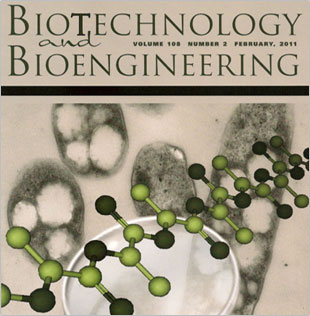
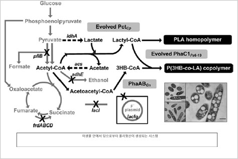
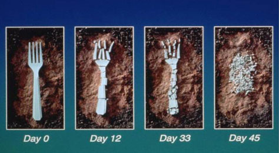

주제별 연구성과
주제별 연구성과
KAIST RESEARCH ACHIEVEMENTS
대장균을 이용한 폴리젖산 생산
생명화학공학과 이상엽
요약
'썩는' 플라스틱, 제품도 만드는 방법도 친환경 플라스틱 일회용품은 편리하지만 분해가 잘 되지 않아 환경문제를 일으키는 경우가 많았다. 그러나 박테리아가 쉽게 분해할 수 있는 친환경 플라스틱이 개발되면서 일회용 플라시틱 제품 사용이 증가하는 등 친환경 플라스틱 시장이 커지고 있다. 이상엽 교수 연구팀은 박테리아를 이용해서 세계 최초로 자연계에서 만들어지지 않는 '폴리젖산(polylactic acid, PLA)'을 생산하는 데 성공했다. 폴리젖산 플라스틱은 흙속에 존재하는 미생물들에 의해서 자연 분해되어 물과 이산화탄소로 다시 돌아오기 때문에 환경 친화적인 원료로 각광을 받고 있다.
연구내용
석유의 가장 중요한 용도 중 하나는 바로 플라스틱이다. 플라스틱이란 단어가 '모양을 마음대로 만들 수 있다'는 뜻에서 유래한 데서 알 수 있듯 플라스틱은 가공이 쉽고 가볍고 튼튼한데다 저렴하게 대량생산할 수 있어 재료분야의 혁명이었다. 그러나 화석연료가 점점 고갈되고 환경에 미치는 악영향이 속속 보고되면서 옥수수 등과 같은 유기물로부터 플라스틱과 유사한 물질을 얻는 방법에 관심이 쏠리기 시작했다. 학계에서는 최근 미생물에서 화학연료를 추출하는 바이오리파이너리(Biorefinery)에 관심을 두고 생물로부터 필요한 물질을 얻어내는 방법을 찾고 있으며 여러 분야에서 성과를 내어 시판되는 제품도 등장했다. KAIST의 이상엽 교수 연구팀은 숙신산, 나일론원료 등 다양한 화학물질들을 대사공학을 통해 만드는 연구를 해왔다. 특히 기존 폴리에스터를 대체할 수 있는 물질인 폴리하이드록시알카노에이트를 미생물을 이용하여 효율적으로 생산하는 공정도 개발하는 성과를 거둔 바 있다. 한편, 최근에는 유기물질 플라스틱 중 자연 상태에서 완전히 분해되는 생분해성이 높고 독성이 거의 없어 생체에 영향을 주지 않는 폴리젖산이 주목받고 있다. 폴리젖산과 유사한 바이오 기반의 플라스틱을 대량 생산할 수 있다면 기존 플라스틱을 완전히 대체하는 것도 가능하다는 관측이 나올 정도다. 그러나 미생물 공정과 화학적 공정을 함께 사용하는 복잡한 과정을 통해서 폴리젖산을 만들어야 했기에 많은 공정 개선이 필요했다. 무엇보다 폴리젖산은 자연상태에서 존재하지 않는 물질이라 전적으로 인공적인 생산에 의존해야 한다는 점 에서 대량생산에는 난점이 많다. 이상엽 교수팀은 LG화학과의 공동연구를 통해 자연계에 존재하지 않는 고분자 화합물을 미생물을 이용하여 생산한다는 아이디어를 통해 연구를 진행하고 있으며 비천연고분자 생산에 관한 첫 번째 성과가 바로 폴리젖산이다.
 그림 1. 이상엽 교수의 표지논문으로 실린 Biotechnology and Bioengineering
 그림 2. 미생물로부터 얻은 바이오고분자.
그림 2. 미생물로부터 얻은 바이오고분자.
차세대 친환경 플라스틱으로 각광받고 있다.
'석유-석탄 없이 바이오 플라스틱'
국내성공
이 교수팀은 미생물인 박테리아를 이용하여 폴리젖산(Polylactic acid, PLA)을 효율적으로 생산하는 방법을 찾아냈다. 기존의 복잡한 2단계 공정을 통해 생산되던 폴리젖산을 지구상에 가장 풍부한 리그노셀룰로우즈 등의 재생 가능한 원료로부터 미생물의 직접 발효로 생산할 수 있게 한 것. 한마디로 미생물을 배양하고 적절한 먹이만 주면 이들이 바이오 플라스틱을 생산해낸다는 것이다. 이 교수팀은 여기서 그치지 않고 다른 단량체들과 젖산이 함께 섞인 다양한 성질의 플라스틱을 만드는 방법도 발견했다. 이 교수 연구팀의 방법을 이용하면 기존의 유기물 기반 플라스틱을 저렴한 비용으로 대량 생산할 수 있다. 이번 연구결과는 전 세계 특허출원 중이며 'Biotechnology and Bioengineering'에 표지 논문으로 게재되었으며, 세계경제포럼 등과 CNN, Economist, US News & World Report 등 다양한 언론의 주목을 받았다.
 그림 3. 대장균이 폴리젖산을 만들어내는 과정
 그림 4. 대장균이 폴리젖산을 만들어내고 있다.
그림 4. 대장균이 폴리젖산을 만들어내고 있다.
의미와 전망
 그림 5. 이상엽 교수가 개발한 대장균이 폴리젖산을 만들어내고 있다.
바이오플라스틱은 석유나 석탄 없이 플라스틱 생산이 가능하기 때문에 이산화탄소 배출량 감소, 원료비용 절감 등 다양한 장점이 있다. 무엇보다 환경오염, 기후변화 등 환경문제가 심각한 때에 바이오플라스틱은 친환경 플라스틱이라는 점이 가장 큰 매력이다. 게다가 화석원료가 고갈되어가고 있으므로 폴리젖산을 비롯한 바이오플라스틱의 사용은 전세계적으로 점점 더 확대될 것이다. 이번 연구는 앞으로 크게 확장될 바이오플라스틱 시장에 대비하는 첫걸음이다. 폴리젖산을 대량생산하는 방법을 응용하면 친환경적인 방법으로 다양한 바이오플라스틱을 만들어낼 수 있을 것이다.
연구비 지원
ㆍ교육과학기술부 바이오의료기술개발사업-시스템인포메틱스사업
ㆍLG화학(주) 기술연구원
특허출원
ㆍ| Park, S.J., Jung, Y.K., Cho, J., Lee, S.Y.,"Cells or Plants Having an Producing Ability of Polylactate or Its Copolymers and Method for Preparing Polylactate or Its Copolymers Using the Same", Patent no. WO 2006/126796 Park, S.J., Yang, T.H., Kim, T.W., Lee, S.Y. et al., "Copolymer containing 3-hydroxyalkanoate unit and lactate unit, and its manufacturing method", Patent no. WO 2008/062996
관련문헌
ㆍ| Jung, Y.K., Kim, T.Y., Park, S.J., and Lee, S.Y., "Metabolic engineering of Escherichia coli for the production of polylactic acid and its copolymers", Biotechnol. Bioeng., 105(1): 161- 171 (2010.1) Jung, Y.K. and Lee, S.Y. "Efficient production of polylactic acid and its copolymers by metabolically engineered Escherichia coli", J. Biotechnol. 151(1): 94-101 (2011.1) Yang, T.H., Jung, Y.K., Kang, H.O., Kim, T.W., Park, S.J., and Lee, S.Y. "Tailormade type II Pseudomonas PHA synthases and their use for the biosynthesis of polylactic acid and its copolymer in recombinant Escherichia coli", Appl. Microbiol. Biotechnol. 90(2): 603-614 (2011.4)